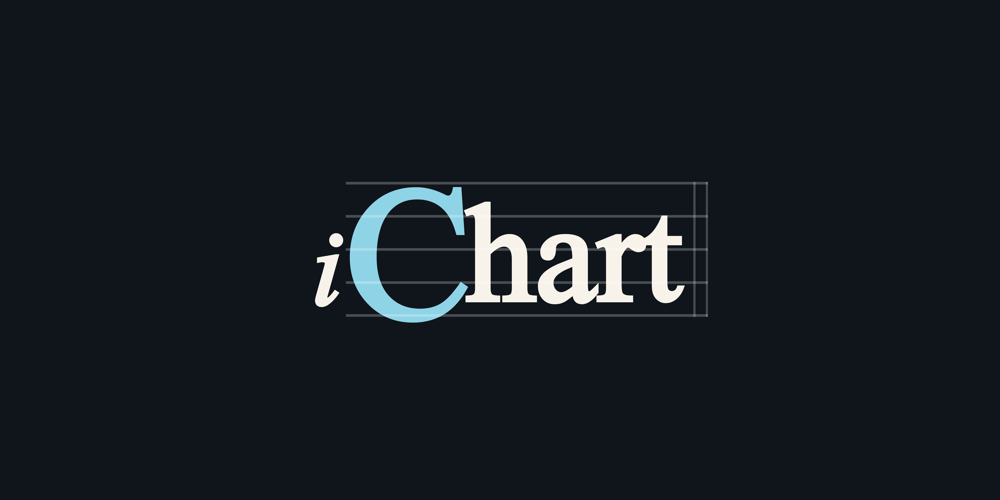

Psychology
Navy creates focus, trust, depth, and a stage/workbench feeling. Warm paper keeps the system human and tied to printed charts. Blue adds modern clarity without becoming loud.
Audit of the B4.8A-H1 canon logo and current Library home-screen palette: psychology, function, contrast, and usage rules.

The current colors read as a focused music workstation: serious, calm, precise, and chart-native. The palette is not trying to entertain the user; it is trying to help them trust the workspace.
Navy creates focus, trust, depth, and a stage/workbench feeling. Warm paper keeps the system human and tied to printed charts. Blue adds modern clarity without becoming loud.
Good for musicians, educators, and chart writers who need a reliable long-session tool. It feels professional without becoming corporate, and musical without becoming decorative.
The pale logo blue is excellent on dark but weak on light. Use iChart Blue for light-surface controls and text. The staff lines are symbolic and should not carry important UI meaning.
Stage and Night should frame brand moments, headers, toolbars, and modal emphasis.
Chart writing and reading surfaces should stay warm, quiet, and high contrast.
Primary controls, active state, and light-surface accents should use #226c8a.
#8fd3e6 is the logo-C color on dark stage surfaces, not a general UI text color.